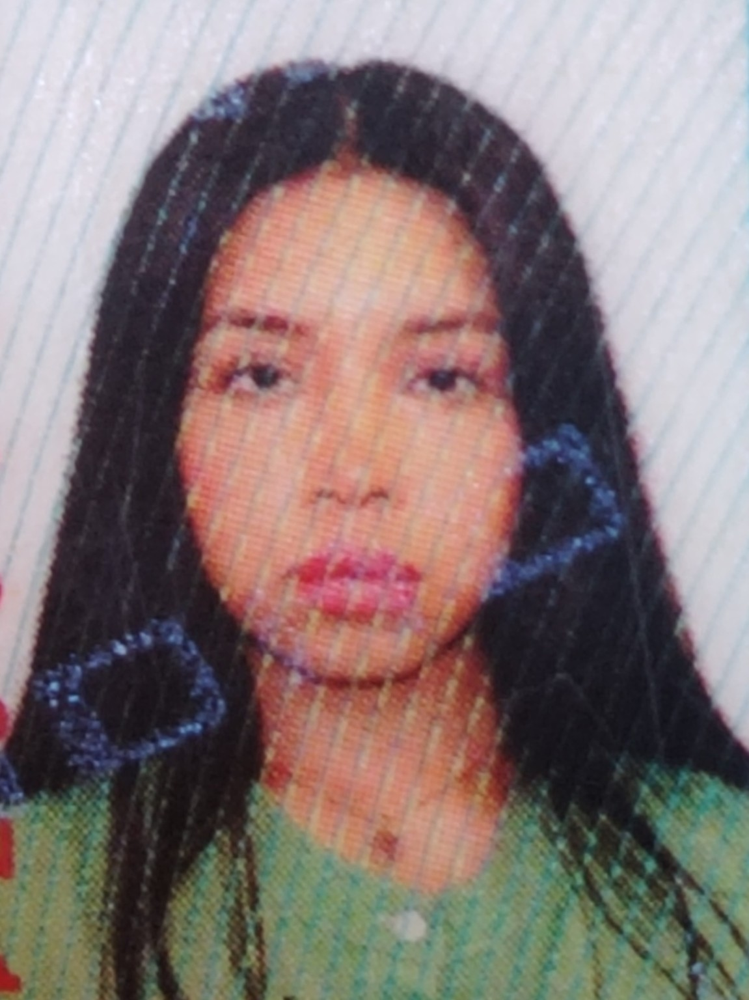

Curso el quinto ciclo de Administración de Negocios en la Universidad Católica San Pablo, donde sigo fortaleciendo mis conocimientos y capacidades.
Portafolio académico
Hola, soy
Alondra
Mansilla.
Estudiante de Administración de Negocios en la Universidad Católica San Pablo. Me interesa aprender, crear ideas y desarrollar habilidades para aportar valor en cada proyecto.

Alondra Mansilla TejadaAdministración de Negocios · 5.º ciclo
Universidad Católica San Pablo
01 · Sobre mí
Aprender hoy,
crecer para mañana.
Una breve presentación de mi camino universitario y de lo que me motiva a seguir desarrollándome.
Busco aprender de nuevas experiencias, trabajar colaborativamente y enfrentar retos con creatividad, compromiso y disposición para mejorar.
02 · Mis capacidades
Habilidades que me impulsan.
Capacidades que pongo en práctica en mis actividades académicas y proyectos.
🤝
Trabajo en equipo💬
Comunicación💡
Creatividad🚀
Liderazgo🌟
Responsabilidad03 · Formación académica
Lo que estoy aprendiendo.
Cursos que forman parte de mi desarrollo universitario en Administración de Negocios.
CURSO 01Cálculo
CURSO 02Fe y Razón
CURSO 03Comportamiento Organizacional
CURSO 04Análisis, Diseño y Gestión de Procesos
CURSO 05Historia
CURSO 06Introducción a la Computación
CURSO 07Desarrollo de Habilidades de Negociación
04 · Mi comunidad académica
Personas con las que aprendo.
Un espacio para presentar a mis profesores y compañeros, y compartir sus perfiles profesionales.
Profesor E. Cuadros
Conoce su página profesional y visita su perfil de LinkedIn.
LinkedIn ↗Rafael Chirinos Aspauza
Visita su página web personal.
Página web ↗Dominick Rayapfatallaique
Visita su página web personal.
Página web ↗Emely Anccari
Visita su página web personal.
Página web ↗Eduardo Isaac Rojas Juárez
Visita su página web personal.
Página web ↗Puedes visitar las páginas personales de mis compañeros desde estos enlaces.
05 · Conectemos
Encuéntrame en LinkedIn.
Conoce más sobre mi formación y mi desarrollo profesional.